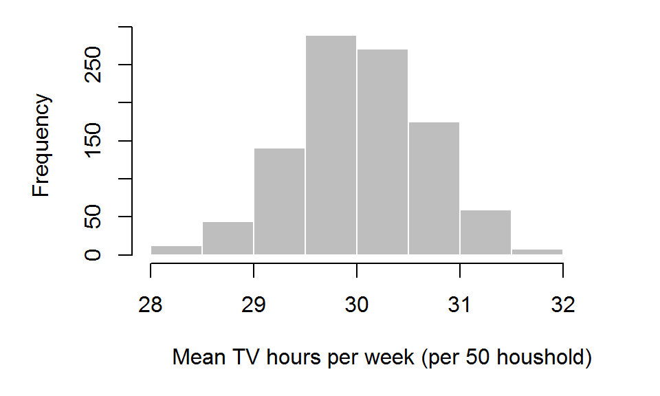
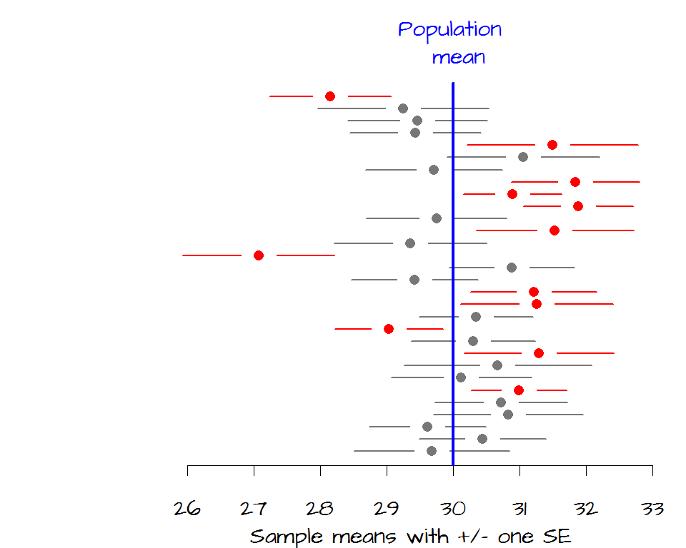
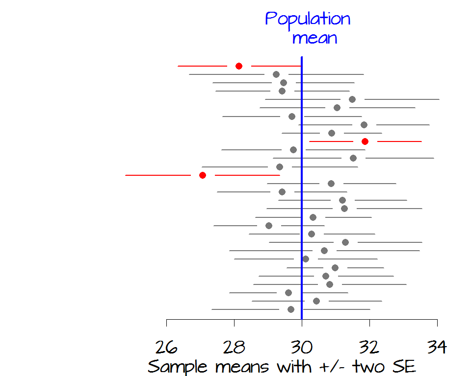
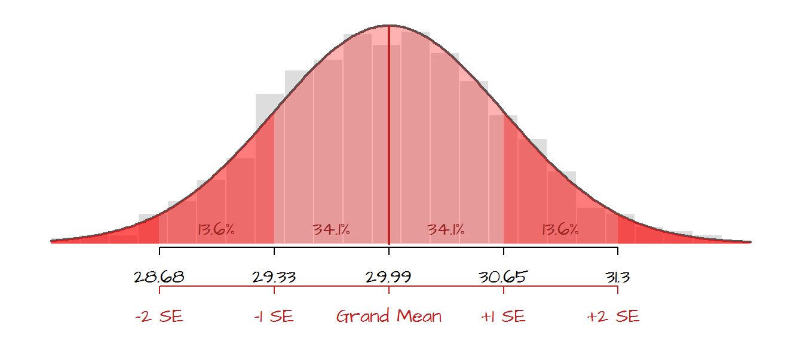
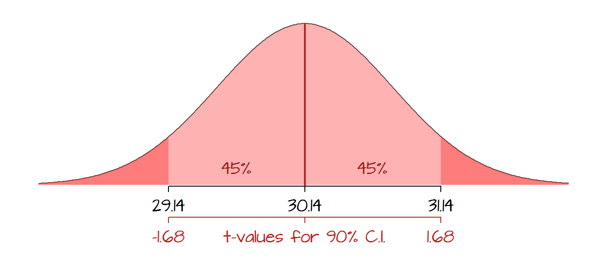

Confidence intervals
Last modified on 2017-07-21
1 Introduction
Most data, or batches, are subsets of some underlying population. From these batches, we attempt to infer about the state of the population. For example, we may want to determine how many hours of TV are watched in each household each week. Since we seldom have the resources needed to collect the data for all households, we opt to collect data for a small subset of the population. From this sampled survey, we compute a summary statistic (such as the mean hours of TV watched each week). We then use this sample statistic as an estimate of the number of hours watched by all households in the population.
Now, if another investigator were to sample other households at random, she will probably come up with a slightly different summary statistic. Likewise, if a hundred other investigators were to sample households at random, they would come up with a hundred slightly different means of TV hours watched. Let’s explore this idea with a simulated data set:
num.samp <- 1000 # Number of samples to collect
samp.size <- 50 # Size of each sample
samp.mean <- vector(length = num.samp) # Create an empty vector array
# Sample the population 'num.samp' of times then compute the sample mean
for (i in 1:num.samp){
samp.mean[i] <- mean(rbeta(samp.size,20,20,ncp=0)*60)
}In the above code, the first two lines define the number of samples to collect, 1000, and the number of households to survey in each sample, 50. In other words, we have 1000 investigators each sampling 50 households. The for loop collects a new sample (of 50 households) at each iteration 1000 times. The function rbeta(samp.size,20,20,ncp=0)*60 randomly generates 50 values from a predefined distribution (think of this as simulating the number of hours of TV watched in each household 50 times). The sample mean of TV hours watched for each 50 household sample is then calculated using the mean() function. So each investigator computes a single value that represents the mean hours of TV watched in the 50 households. Since we have 1000 investigators, we have 1000 sample means. We can plot the distribution of the sample means using a histogram.
hist(samp.mean, xlab="Mean TV hours per week")
Note that the distribution of the underlying population mean need not be normally distributed to produce a normally distributed sample mean distribution. That said, the histogram just presented does not represent the distribution of mean hours of TV watched for the population, but the distribution of the sample averages.
2 Estimate of a population statistic from many samples
From the histogram it seems that, out of the 1000 samples, most sample means are centered around 30. In fact, we can compute the arithmetic mean from the 1000 samples. This statistic is referred to as the grand mean (not to be confused with each individual sample mean of which there are 1000 in our example).
grand.mean <- mean(samp.mean)
grand.mean[1] 29.99018From the grand mean, we might be tempted to infer that the mean hours of TV watched by each household in the entire population is 29.99 hours. But note from the histogram that there is some variability in the means computed from each 50 household samples. It might behoove us to assess the chance that this estimate (the grand mean) is not representative of the whole population mean. We can find out how big the chance error might be by calculating the standard error.
The standard error is the standard deviation of the sampling distribution of a statistic; it’s the likely size of chance error when estimating a statistic. In our case the standard error of our sample means, \(SE\), is computed by taking the standard deviation of the 1000 sample means:
SE <- sd(samp.mean)
SE[1] 0.6568007We can now state that the average number of hours of TV watched per household per week is 29.99 \(\pm\) 0.66. It’s important to note that \(SE\) is not an estimate of the population standard deviation but a measure of uncertainty in the population mean estimate.
In most cases, we do not have the luxury of collecting hundreds or thousands of samples. We usually only have a single sample to work with (hence a single sample from which to make inferences about the whole population). Methods in estimating the sample variability given a single sample is covered next.
3 Estimate of a population statistic from a single sample
let’s assume that we only have a single sample of 50 households to work with. Let’s store these values in a vector we’ll call x.
x <- c(25.7, 38.5, 29.3, 25.1, 30.6, 34.6, 30.0, 39.0, 33.7, 31.6,
25.9, 34.4, 26.9, 23.0, 31.1, 29.3, 34.5, 35.1, 31.2, 33.2,
30.2, 36.4, 37.5, 27.6, 24.6, 23.9, 27.0, 29.5, 30.1, 29.6,
27.3, 31.2, 32.5, 25.7, 30.1, 24.2, 24.1, 26.4, 31.0, 20.7,
33.5, 32.2, 34.7, 32.6, 33.5, 32.7, 25.6, 31.1, 32.9, 25.9)The standard error of the mean from the one sample, can be estimated using the following formula:
\[ SE_{mean} = \frac{SD}{\sqrt{sample\; size}} \]
where \(SD\) is the standard deviation of number of hours watched for the entire population (i.e. all households, not just those sampled). The standard error of the mean is sometimes represented as \(\sigma_{\bar X}\). It’s important to note two things here: * this approximation applies only to the uncertainty associated with the estimate of the population mean (and not other statistics like the median, count or percentage–these are treated later), * this approximation holds for a large sample sizes only (usually 30 or greater).
However, there’s a problem. We usually don’t know the population’s \(SD\) (if we did, we would not need to bother with sampling in the first place!) so, for a large sample size, we can estimate \(SD\) using the sample means’ standard deviation, \(SD_{sample}\) giving us \[ SE_{mean} = \frac{SD_{sample}}{\sqrt{sample\; size}}. \]
So following up with our single sample example, we can estimate the population mean and the standard error of the mean from our sample as:
mean.x <- mean(x)
SE.x <- sd(x) / sqrt(length(x))where length(x) is an R function that gives us the number of values in the vector x (i.e. our sample size \(n\)). In this example, the population mean estimate is 30.14 hours with a standard error, \(\sigma_{\bar X}\), of 0.6 hours.
So how exactly do we interpret \(SE\) ? As noted earlier, \(SE\) is not an estimate of the population standard deviation. It’s a measure of how likely the interval, defined by \(SE\), encompasses the true (population) mean. In the following figure, the sample means for 30 samples are plotted along with error bars depicting their \(\pm\) 1 \(SE\) (another way to interpret a \(SE\) is to say that we are ~68% confident that the \(\pm\) 1 \(SE\) interval encompasses the true population mean). The blue vertical line represents the true population mean of 30, the expected value (the unknown parameter we are usually seeking). Batches of data (samples) whose \(\pm\) 1 \(SE\) range does not contain the true population mean are plotted in red.

It’s clear from the figure that 12 samples have a 68% confidence interval that do not contain the true population mean. If we want to increase our confidence that the sample mean contain the true mean value, we can widen our confidence from 1 \(SE\) to 2 \(SE\) which covers about 95% of each sample distribution.

Now, only three of the 30 samples have a confidence interval that does not contain the true population mean of 30 hours of TV watched per week.
One \(SE\) on both sides of the sample mean encompasses a probability of about 68% (34% on either side of the mean). This is our 68% confidence interval (i.e. there is a 68% chance that this interval contains the true population mean). If we want to increase our confidence that the interval contains the population mean, we can widen it by say 2 \(SE\) which provides us with about 95% confidence.
The following figure displays the histogram from 1000 sample means superimposed with a Gaussian curve. The (red) shaded areas represent the fraction of the sample mean values that fall within each SE ranges. Note that fewer and fewer sample means fall within SE intervals as the sample means diverge from the grand mean.

So, given our most recent example, we can state that there is a ~ 68% chance that the interval (30.14 - 0.6) and (30.14 + 0.6) contains the true population mean of hours of TV watched each week or, put more succinctly, there is a 68% chance that the mean hours of TV watched by the population is 30.14 \(\pm\) 0.6.
Note that we are making a statement about the probability that the interval includes the population mean and not the probability that the population mean falls between this interval. The latter would imply that the population mean is a random variable which it’s not, it’s static!
The standard error equation used thus far only applies to the mean, if another population statistic is to be estimated, then other \(SE\) formulas have to be used. Other types of \(SE\)’s include the standard error of sum of samples, and fractions (of a binary output) of samples (Freedman et al., p.422):
\[ SE_{sum} = \sqrt{sample\; size} \times SD \]
\[ SE_{fraction} = \frac{\sqrt{(fraction\; of\; 1's)(fraction\; of\; 0's)}}{\sqrt{sample\; size}} \]
4 A universal approach to computing the standard error: the bootstrap
The preceding section highlighted a few formulae for SE and some restricting assumptions such as the sample size. What if we want to to estimate the population median, mode, etc.. for which a formula may be illusive or non-existent? The solution to this problem is a technique called bootstrap. A bootstrap is a computer simulation often used to compute measures of accuracy to statistical estimates. The idea is simple: re-sample from the sample many times, then calculate the statistic for each sub-sample. The re-sampling is usually done with replacement (i.e. a same value can be picked more than once). The bootstrap standard estimated error is the standard deviation of the bootstrap samples.
Continuing with the 50 household sample, we can apply the bootstrap technique to estimate the population median in R as follows:
median.boot <- numeric() # Create an empty vector
for (i in 1:10000){
sample.boot <- sample(x, size = length(x), replace=TRUE)
median.boot[i] <- median(sample.boot)
}
SE.boot <- sd(median.boot)
SE.boot[1] 0.7066932In this example, the sample x is re-sampled 10,000 times (each sample having a size equal to the original sample, length(x)). The function sample() samples anew from the sample x with replacement each time. The median of each re-sampled batch is stored in the variable median.boot[i]. The variable SE.boot stores the standard error for the bootstrap sample medians, or 0.7066932 in this working example (note that your result may differ slightly given that the re-sampling process is random).
Another way to implement the bootstrap technique is to use the function boot() from the boot library. This reduces the code to:
library(boot)
f.med <- function(Y,i) median(Y[i])
median.boot <- boot(x, R = 10000, statistic = f.med)
SE.boot <- sd( as.vector(median.boot$t))
SE.boot[1] 0.6780954In this example, we are defining a function called f.med where the function returns the median value for an array. This is a simple example of a function, but this demonstrates how one can create a customized statistic for which \(SE\) is sought. The function boot returns a list and not a numeric vector. To view the contents of a list, you can invoke the structure function str().
str(median.boot)List of 11
$ t0 : num 30.4
$ t : num [1:10000, 1] 29.8 31.1 30.1 30.8 29.6 ...
$ R : num 10000
$ data : num [1:50] 25.7 38.5 29.3 25.1 30.6 34.6 30 39 33.7 31.6 ...
$ seed : int [1:626] 403 328 -986067110 -159805141 -1436842664 856158602 -2105953327 -2028689650 565466580 149568920 ...
$ statistic:function (Y, i)
..- attr(*, "srcref")=Class 'srcref' atomic [1:8] 2 16 2 41 16 41 2 2
.. .. ..- attr(*, "srcfile")=Classes 'srcfilecopy', 'srcfile' <environment: 0x0000000007f2e1d8>
$ sim : chr "ordinary"
$ call : language boot(data = x, statistic = f.med, R = 10000)
$ stype : chr "i"
$ strata : num [1:50] 1 1 1 1 1 1 1 1 1 1 ...
$ weights : num [1:50] 0.02 0.02 0.02 0.02 0.02 0.02 0.02 0.02 0.02 0.02 ...
- attr(*, "class")= chr "boot"The list contains close to a dozen components. The component of interest to us is t which stores the median values from all 10,000 sub-samples. This component is accessed by adding the $ symbol to the end of the list name median.boot (i.e. median.boot$t). If you type median.boot$t at a command prompt, you will note that the data are stored as a matrix (and not a vector). Hence, if you want to compute the standard deviation of this matrix by invoking sd(median.boot$t), you will be presented with a warning along the lines of Warning: sd(<matrix>) is deprecated.... To circumvent this warning, you can convert the matrix to a vector using the as.vector() function (i.e. sd( as.vector(meadian.boot$t) ).
5 Confidence intervals
The idea of a confidence interval, CI, is a natural extension of the standard error. It allows us to define a level of confidence in our population parameter estimate gleaned from a sample. For example, if we wanted to be 95% confident that the range of mean TV hours per week computed from our sample encompasses the true mean value for all households in the population we would compute this interval by adding and subtracting \(1.96\; SE\) to/from the sample mean. But beware, people will sometimes state this as “… there is a 95% chance that the population mean falls between such and such values…” which is problematic as noted earlier since it implies that the population mean is a random variable when in fact it’s not. The confidence interval reminds us that the chances are in the sampling and not the population parameter.
A confidence interval of 68% and 95% are easily estimated from \(1 SE\) or \(1.96 SE\) respectively, but what if we want to define some other confidence interval such as 85% or 90%? To estimate the confidence interval for any other value, simply invoke the Student’s t quantile function qt() in conjunction with \(SE\). For example, to generate a 90% confidence interval for the mean hours of TV watched per household:
mean.int.90 <- mean.x + qt( c(0.05, 0.95), length(x) - 1) * SE.x
mean.int.90[1] 29.13527 31.14473In this example, we can state that we are 90% confident that the range [29.14, 31.14] encompasses the true population mean. The function qt finds the two-tailed critical values from Student’s t distribution with length(x) -1 degrees of freedom (or df = 49 in our working example). Note that using Student’s t value is recommended over the normal distribution’s z value when sample size is small. If the sample size is large, Student’s t value and the normal’s z values converge.
In the following figure, the 90% confidence range is shaded in the light red color. Recall that the distribution is for the many different sample means that could be drawn from the population and not the distribution of the raw (sampled) data.

Likewise, we can compute the 90% confidence interval from the bootstrap \(SE\) estimate of the median.
median.int.90 <- mean(median.boot$t) + qt( c(0.05, 0.95), length(x) - 1) * SE.boot
median.int.90[1] 29.34539 31.61912This example suggests that there is a 90% chance that the range of median values [29.35, 31.62] encompasses the true population median. Note that using standard bootstrap techniques to estimate \(CI\) requires that the bootstrap distribution of a statistic follow a normal distribution. If it does not, the computed \(CI\) may over- or under-estimate the true confidence interval. A safer (and more robust) bootstrap based measure of \(CI\) is the bias corrected bootstrap method, BCa, which can be easily computed using the boot.ci function in the boot library. The parameter conf defines the confidence interval sought.
median.int.90.BCa <- boot.ci(median.boot, conf = .90, type="bca")
median.int.90.BCaBOOTSTRAP CONFIDENCE INTERVAL CALCULATIONS
Based on 10000 bootstrap replicates
CALL :
boot.ci(boot.out = median.boot, conf = 0.9, type = "bca")
Intervals :
Level BCa
90% (29.4, 31.2 )
Calculations and Intervals on Original ScaleThe BCa interval values can be extracted from the variable by typing median.int.90.BCa$bca[4:5] at the prompt.
On a final note, the margin of error (MoE) can be used interchangeably with the confidence interval. The [American Statistical Association][1] (page 64) defines the MoE as a 95% confidence interval, but this definition is not consistent across the literature. So if given estimates with a measure of confidence defined as a MoE make sure to ask for the provider’s definition of the MoE!
6 References
Freedman D.A., Robert Pisani, Roger Purves. Statistics, 4th edition, 2007.
McClave J.T., Dietrich F.H., Statistics, 4th edition, 1988.
Session Info:
R version 3.4.0 (2017-04-21)
**Platform:** x86_64-w64-mingw32/x64 (64-bit)
attached base packages: stats, graphics, grDevices, utils, datasets, methods and base
other attached packages: boot(v.1.3-19), gplots(v.3.0.1), MASS(v.7.3-47) and tidyr(v.0.6.3)
loaded via a namespace (and not attached): Rcpp(v.0.12.12), Rttf2pt1(v.1.3.4), knitr(v.1.16), bindr(v.0.1), magrittr(v.1.5), R6(v.2.2.2), rlang(v.0.1.1), stringr(v.1.2.0), dplyr(v.0.7.2), caTools(v.1.17.1), tools(v.3.4.0), KernSmooth(v.2.23-15), extrafontdb(v.1.0), gtools(v.3.5.0), htmltools(v.0.3.6), yaml(v.2.1.14), rprojroot(v.1.2), digest(v.0.6.12), assertthat(v.0.2.0), tibble(v.1.3.3), bookdown(v.0.4), bindrcpp(v.0.2), bitops(v.1.0-6), glue(v.1.1.1), evaluate(v.0.10.1), rmarkdown(v.1.6), gdata(v.2.18.0), stringi(v.1.1.5), pander(v.0.6.0), compiler(v.3.4.0), backports(v.1.1.0), extrafont(v.0.17) and pkgconfig(v.2.0.1)
 Manny Gimond
Manny Gimond